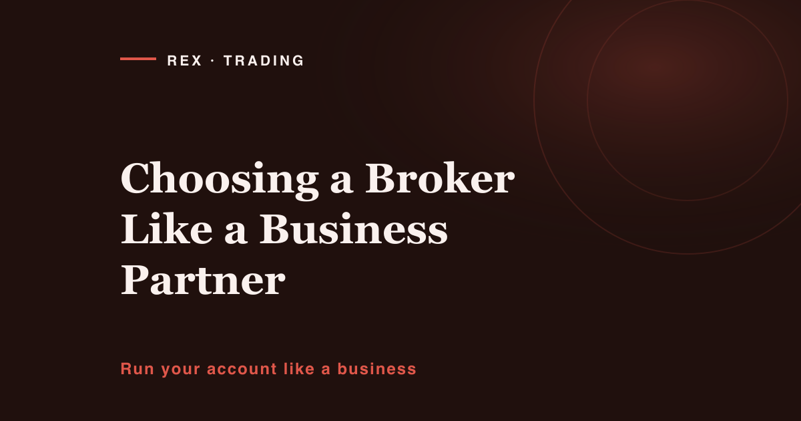

When I ran my old business I would not hand a supplier a deposit without knowing three things: who they legally were, where their money sat, and what happened when something went wrong. That was not paranoia, that was Tuesday. Anyone holding my working capital got checked, and the check took longer than the sales call.
Then I started trading and did the opposite. I picked my first broker off a banner ad and funded the account in twenty minutes. I do not remember the terms; I remember the bonus number, because that was the only thing the ad was selling.
Here is the part most traders never sit with: your broker is a business partner, not a neutral pipe to the market. It is a company that holds your working capital, sets your real cost of doing business, decides at what price your orders fill, and controls whether your money comes back. Four of the biggest variables in your P&L, set by a counterparty most people chose in an afternoon. That is not a trading problem. It is a procurement problem, and procurement problems have checklists.
1. Regulation: Ask Which Entity, Not Whether They're "Regulated"
Almost every broker says it is regulated. That word alone tells you nothing, because the sentence is incomplete. The real question: which legal entity will my account be opened under, and who licenses that entity?
Large brokerages commonly operate several entities. The same brand may hold a licence from a strict regulator in one jurisdiction and run an offshore entity somewhere with light-touch supervision. The website shows the impressive licence; the agreement you sign may put you under the other. Those entities can carry different leverage, different complaint procedures, and — the part that matters — completely different consequences if the firm fails.
So before you deposit: find the licence number and search the regulator's own public register, not the broker's page about the regulator. Check the company name there matches the name on the agreement you sign, that the licence is active, and what it permits. Then check whether that jurisdiction runs a compensation scheme, whether a non-resident qualifies, and the cap. This is a credit check on a supplier: confirming a real, supervised legal person sits on the other side of your agreement.
2. Segregated Client Funds: Where Does the Money Actually Sit?
When you wire money to a broker it lands in a bank account. The question that matters is whether that is the broker's operating account or a separate one holding client money only.
Segregation means your funds are kept apart from the firm's working capital — not used to pay staff, marketing, or the firm's own losses. It is no magic shield and guarantees nothing if the firm collapses. But its absence is a red flag: your capital would carry the broker's business risk on top of your own market risk. You did not sign up to be an unsecured creditor of a marketing company.
Look for an explicit statement in the client agreement that funds are held segregated, plus named banking partners and independent audits where disclosed. If the word "segregated" appears nowhere in the legal documents, that silence is your answer. Ask support in writing and keep the reply.
3. The Real Cost of Trading: Add It All Up, Then Add the Swap
Every business owner knows the difference between headline price and landed cost. Traders forget it. You are quoted a spread, so you compare spreads and stop — like comparing suppliers on unit price while ignoring shipping and payment terms.
Spread. Not the "from" number in the ad, which is a best-case figure from the quietest moment of the day. What matters is the typical spread during the sessions you actually trade, and what it does around high-impact news. Ask for average spread data, or measure it yourself.
Commission. Raw-spread accounts charge per lot per side. Compare like with like: spread plus commission on one account type versus a wider all-in spread on another, in your own currency at your typical size. And the edges — funding and withdrawal fees, currency conversion, inactivity charges. None is dramatic; all of it comes from the same pot.
Swap. The one people discover by accident. Hold a position past the daily rollover and you pay or receive financing, and on some instruments that charge is meaningful. Triple swap is applied on one day of the week to cover the weekend. If your approach holds trades for days, swap may quietly be your largest cost line. Check the published swap table before you open the account, not after.
Then do what an operator does: build one number. Estimate your monthly trade count and average size, and calculate your expected annual cost of trading with this counterparty. That figure makes comparison trivial, and it belongs in the costs line of your plan. If you have no plan, the one-page trading business plan template puts cost, size and rules on a single sheet — which is where you notice a cost base eating your edge.
4. Execution: The Cost You Cannot See on the Website
Spread and commission are advertised. Execution quality is not, and it can cost more than both. Execution is the gap between the price you asked for and the price you got. Three things determine it: fill speed; whether a volatility spike gets you filled with slippage, requoted, or rejected; and whether slippage is symmetrical, so you occasionally get a better fill as well as a worse one, rather than it only ever running against you.
You cannot fully assess this before funding. What you can do is start small: trade at minimum size for several weeks and log every fill — requested price, filled price, time, conditions. That log is your supplier quality report, and it tells you more than any review site. Firms confident in their execution also describe their model and routing in detail; firms that would rather talk about their bonus say nothing.
Broker due diligence is unglamorous work, and easier when someone else has already asked the awkward questions. I run a Telegram channel about the operational side of trading — process, risk, infrastructure. No pitch here: you're welcome to sit in and read for a while.
If you would rather work alone, the one-page business plan for your trading account is free. It has a costs line — exactly where the all-in cost work above goes.
5. Withdrawals: The Only Test That Really Counts
The whole relationship is measured on one event: you ask for your money and it arrives. Everything else — platform, spreads, support, branding — is preamble. So test it early. Fund, trade small for a few weeks, then withdraw a portion before you have any reason to be emotional about it. Time it, note what documents they ask for, whether those requirements were disclosed up front, and whether anyone tries to talk you out of it.
Two patterns are worth naming. First, verification requested only at withdrawal and never at deposit: a firm that made it frictionless to give them money and effortful to take it back has told you its priorities. Second, the retention call — a withdrawal request triggering an offer of a bonus, a "manager", a reason to stay. In any other industry that is a supplier refusing to release goods you already paid for.
6. Platform, Support, and What Happens When It Breaks
Systems fail. That is not the test. The test is what the company does in the twenty minutes after — and any business owner who has had a supplier go dark mid-order knows the feeling.
On the platform: check whether it stays connected during high-impact news, when everyone tries to act at once. Check whether the mobile app can modify or close a position, because your phone is where you will be when it matters. Check for an honest incident history.
On support: test it before you need it. Send a specific question about swap calculation or margin close-out, not "hello". Note how long the reply takes, whether a human answers, and whether the answer is accurate or scripted. Then find out what happens if the platform is down and you need to close a position.
Also read the margin and close-out policy: the margin call level, the stop-out level, the order positions are liquidated in. It is the most consequential clause in the agreement and almost nobody reads it — position sizing only works if you know the point at which the broker starts making decisions for you.
- Identify the legal entity on your client agreement, and confirm its licence on the regulator's own public register — not the broker's website.
- Confirm the licence is active, and whether any compensation scheme covers non-resident clients, and at what cap.
- Find written confirmation that client funds are held segregated. Ask support in writing if the documents are silent.
- Pull the published swap table for the instruments you trade, and note the triple-swap day.
- Build one all-in annual cost estimate — spread, commission, swap, funding fees — at your real trade count and size.
- Read the margin call and stop-out policy in full. Write down both levels and the liquidation order.
- Trade minimum size for several weeks, logging requested price versus filled price on every order.
- Run a deliberate test withdrawal early, and note whether anyone tried to retain you.
- Send support one hard technical question and rate the reply on speed, accuracy and whether a human wrote it.
- Check platform behaviour during high-impact news, and whether a dealing desk answers when it is down.
- Search the regulator's register for enforcement actions, and check other regulators' warning lists.
7. The Shiny Things That Belong in Their Budget, Not Your Decision
Deposit bonuses. Read the terms. Bonus credit typically carries volume conditions — usually in lots traded — before it or any profit attached to it can be withdrawn. A bonus is not a gift; it is an incentive to overtrade, funded by the spread you pay while meeting the condition. In supplier terms: a discount contingent on buying far more than you planned.
Very high leverage as a headline. Available leverage is not used leverage. But when a firm leads with an extreme number, notice what it is designed to attract, and that accounts using extreme leverage rarely last long enough to be anyone's long-term revenue.
Contests, countdowns and prize draws. Anything engineered to make you act faster than you otherwise would works against the discipline your account depends on. Same argument as treating trading like a business: businesses do not make procurement decisions because a timer is running.
Untraceable awards and paid endorsements. Many awards are placements from publications that exist to sell them, and an endorsement from someone paid per referral is a sales channel, not a review. None of it is disqualifying by itself — it is marketing spend, and marketing spend is not evidence about custody of your money, execution, or whether a withdrawal clears.
Frequently Asked Questions
Is an offshore-regulated broker automatically a bad choice?
No, but price the difference honestly. Lighter-touch jurisdictions generally mean weaker complaint mechanisms, less rigorous capital and audit requirements, and often no compensation scheme. If you choose one knowingly, size your exposure accordingly. The mistake is not choosing offshore, it is doing so unknowingly.
How much should I deposit while testing a broker?
Only what you would accept losing entirely, and enough to trade your normal process at minimum size for several weeks. The purpose is not returns; it is data on spreads, execution, support and withdrawals.
Should I keep accounts with more than one broker?
Many experienced traders do, for the same reason you would not single-source a critical supplier: continuity, and spread counterparty risk. The trade-off is more admin and more idle capital. If your account is small, one well-vetted broker plus a cash reserve held outside any broker is usually more sensible.
What are the earliest signs a broker relationship is going wrong?
Withdrawal timelines quietly stretching. Documentation never disclosed at signup. A retention call every time you take money out. Support turning vague on account-critical questions. Spreads widening for reasons that do not match the market. Any one might be noise; a pattern is a signal to reduce exposure and withdraw in stages rather than argue.
A Word on Risk (Read This Before You Trade)
Trading carries a real risk of losing money, and a large share of retail accounts do lose money. Nothing here is financial advice or a personal recommendation. I do not know your finances, your obligations, or your tolerance for loss — you do, and that judgement is yours.
This article is educational and broker-neutral by design. I have named no firm and recommended none, and there is no referral or affiliate link anywhere in it. Any general market discussion elsewhere on this site is for illustration only: no entry, stop or target discussed should be treated as a signal.
Be clear about what this checklist can and cannot do. Choosing a broker carefully removes one category of avoidable risk: money disappearing for reasons unrelated to the market, or costs consuming an otherwise workable approach. That is the only thing it removes. A well-regulated broker with segregated funds and clean withdrawals will process your losing trades with exactly the same efficiency as your winning ones. No broker choice makes trading safe. It only means that when things go badly, the reason is the market and your own decisions — at least things you can study. Never trade with money you need for anything else.
About Rex
I ran a business for five years before I ever placed a trade. Thin margins, and a habit that came from being burned once: I checked anyone who held my money — bank references, company filings, payment terms in writing. Unexciting, and worth more than any clever bit of selling.
Then I opened a trading account and left all of that at the door. I blew four accounts learning why. Most of it was me — but a meaningful slice was cost I never calculated, execution I never measured, terms I never read. I had vetted a paper supplier harder than the firm holding my capital.
These days I run the REX Trading Signal Telegram channel, around 11,900 people, on three rules I don't break: every signal carries a stop loss, losing trades get posted alongside the winners, and I never promise profit — because I can't. The same terms I'd want from any partner: full disclosure, downside up front, no claims that can't be backed.
More about how I work is on the about page. The short version: the traders who last aren't the ones with the sharpest entries. They're the ones who built a business underneath the trading — and a business begins with knowing exactly who is holding your money.